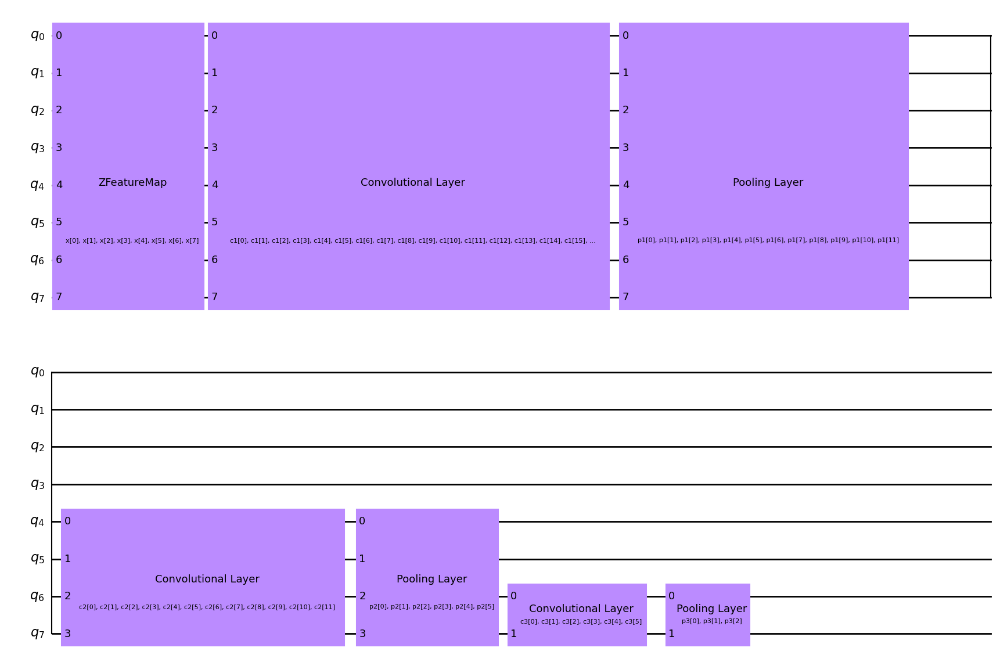
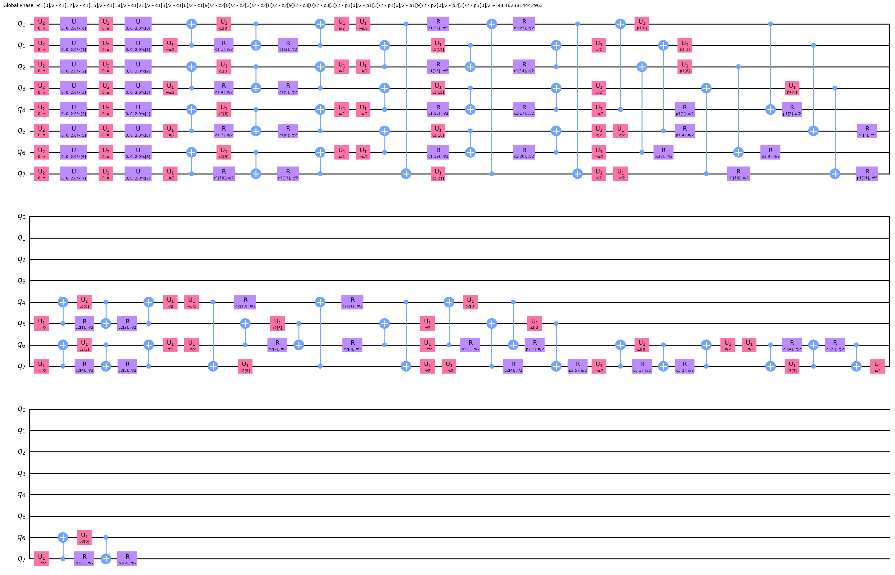
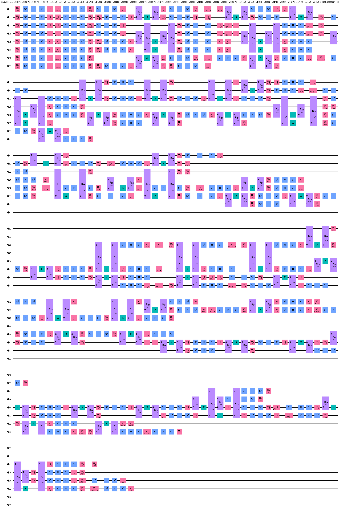
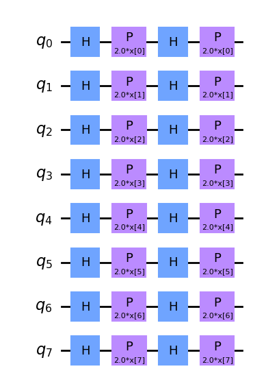
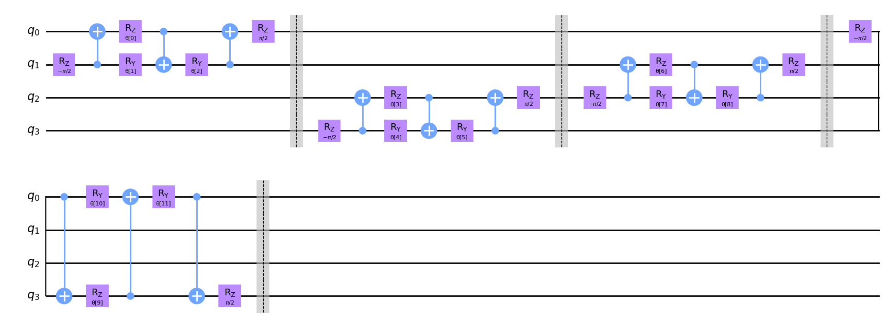
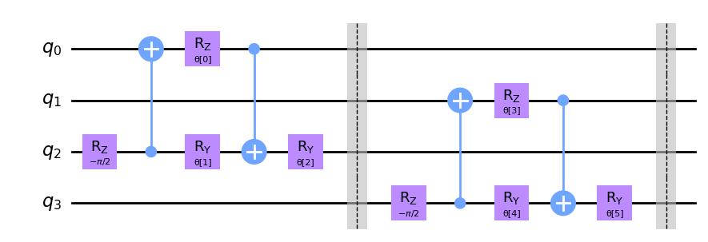
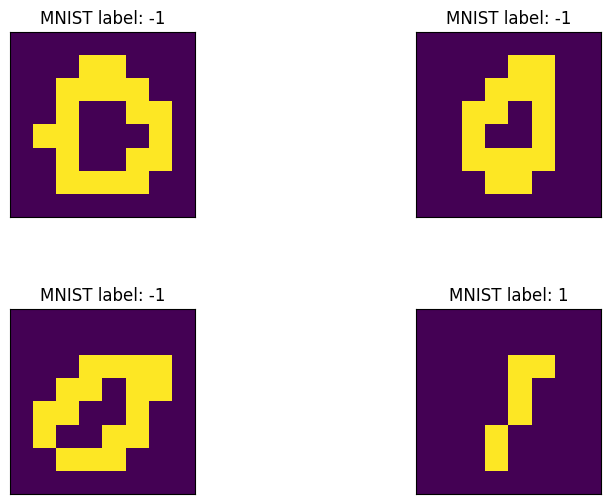
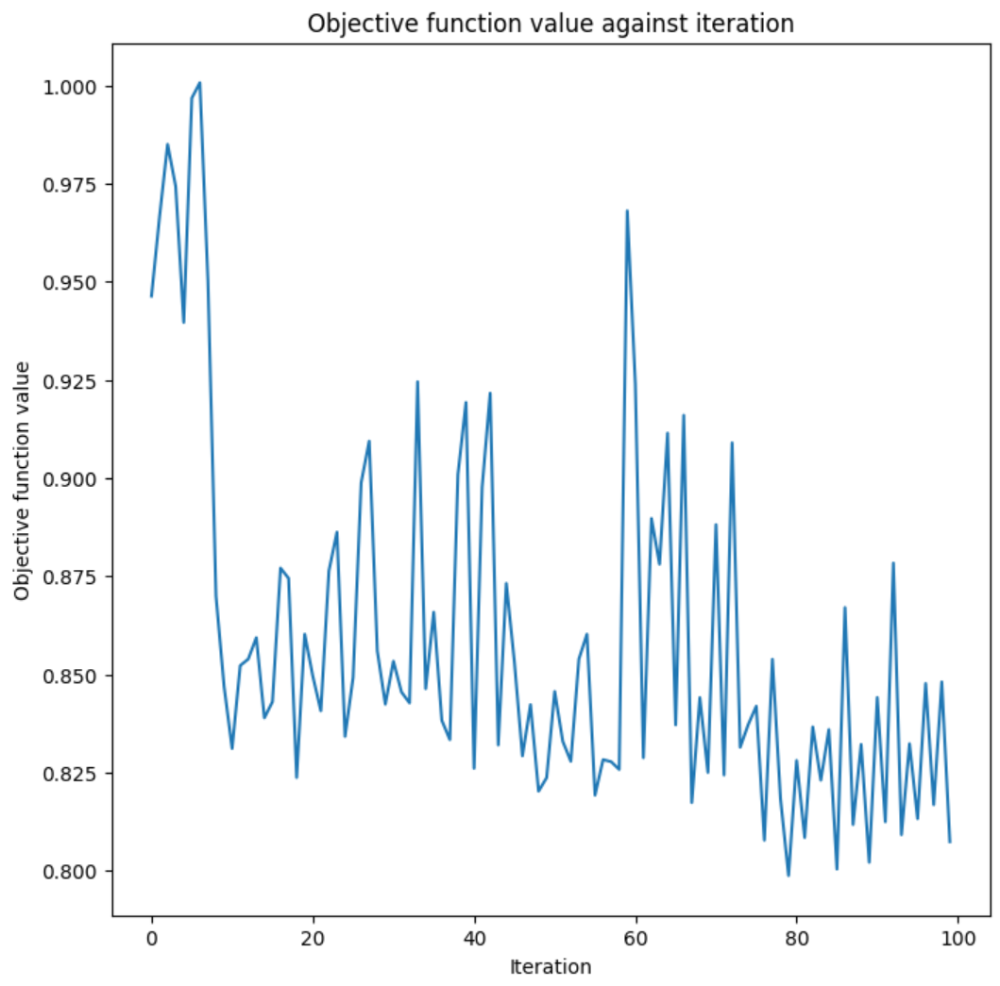
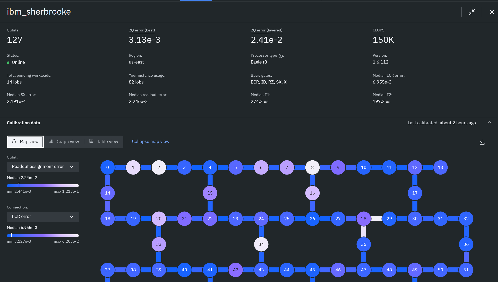
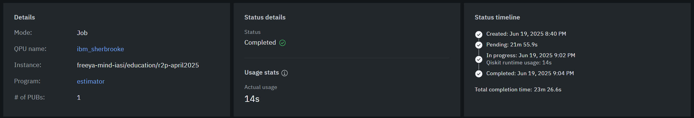

✏️ Draw Your Digit
Current Predictions
💻 Classical NN
🔄 Hybrid NN
⚛️ Quantum NN
🎯 Learning Objectives
- Understand the fundamental differences between neural network types
- Compare performance characteristics and use cases
- Explore quantum advantages in machine learning
- Analyze real-time predictions and confidence levels
- Play with the popular MNIST dataset
🔬 Network Comparison Overview
| Aspect | Classical NN | Hybrid NN | Quantum NN |
|---|---|---|---|
| Processing Speed (training) | ~11 min (5000 samples) | ~20 min (3000 samples) | ~26 min (200 samples) |
| Accuracy on MNIST | ~98% | ~98% | ~87% |
| Hardware Requirements | Standard GPU/CPU | GPU + Quantum Simulator | Quantum Computer/Quantum Simulator |
💻 Classical Neural Network
🏗️ Architecture
Classical Convolutional Neural Networks (CCNNs) are a subclass of artificial neural networks which have the ability to determine particular features and patterns of a given input.
We used traditional feedforward network with multiple hidden layers. Uses standard neurons with weighted connections and activation functions (ReLU)
⚡ How it Works
The capability of determining features is a result of the two types of layers used in a CCNN, the convolutional layer and pooling layer.
The convolutional layer makes use of a kernel, which can determine features and patterns of a particular input.
On the other hand, a pooling layer reduces the dimensionality of the input data, reducing the computational cost and amount of learning parameters in the CCNN.
✅ Advantages
• Well-established and understood
• Fast inference on standard hardware
• Extensive tooling and frameworks
• Proven performance on many tasks
⚠️ Limitations
• Can require many parameters (in our case 710794)
• Prone to overfitting
• Limited by classical computation


🔄 Hybrid Neural Network
🏗️ Architecture
Combines a classical Convolutional Neural Network (CNN) for initial image feature extraction with a Quantum Neural Network (QNN) for final binary classification.
The CNN downsamples MNIST images (28x28) to 2 classical features, which are then input to a 2-qubit QNN, followed by a final classical linear layer for output.
⚡ How it Works
Raw MNIST images (0s and 1s) are first processed by convolutional and fully-connected classical layers to extract relevant features.
These 2 extracted classical features are then encoded into a 2-qubit quantum state using a ZZFeatureMap. A RealAmplitudes quantum circuit then applies learnable rotations and entanglements.
Quantum measurements are taken, providing a single output that's then mapped to two class probabilities (0 or 1) by a final classical layer.
✅ Advantages
• Leverages Strengths: CNN for initial heavy lifting (feature extraction), QNN for
quantum-enhanced classification on reduced feature set.Add commentMore actions
• Low Qubit Count: Utilizes only 2 qubits, making it feasible for current
quantum simulators and potentially near-term quantum hardware.
• Improved Accuracy: Increased dataset size and focused scope lead to high
accuracy on the specific 0 vs. 1 task.
• Bridge to full quantum computing
⚠️ Limitations
• Quantum Simulation Overhead: Still relies on quantum simulators for training and
inference, which can be computationally intensive.Add commentMore actions
• Training Stability: As with many hybrid models, training can sometimes
exhibit instability or slow convergence.
• Hardware Dependency: Performance and scalability are still limited by the
capabilities of current and future quantum hardware.
⚛️ Quantum Neural Network
🏗️ Architecture
Built entirely with quantum circuits using qubits, quantum gates, and quantum measurements. Exploits quantum phenomena like superposition and entanglement.

High Level QCNN diagram

Logical Quantum Circuit Implementation

Transpiled Quantum Circuit
⚡ How it Works
Data is encoded into quantum states, processed through parameterized quantum circuits, and measured to extract classical outputs. Uses quantum interference for computation.

Input Encoding Feature Map

Quantum Convolutional Layer

Quantum Pooling Layer

MNIST Downsampled Images (8x8)
✅ Advantages
• Exponential state space with few qubits
• Natural handling of probabilistic data
• Potential quantum speedup
• Novel computational paradigms

Objective function optimization

IBM real Quantum Backend

IBM pub job
⚠️ Limitations & Technical Details
🚧 Current Limitations:
• Requires quantum hardware 🖥️
• Susceptible to quantum noise 📡
• Limited qubit count currently 🔢
• Complex quantum error correction 🛠️
🤔 Why 8 Qubits?
• "0" spreads ink fairly evenly across rows 📊
• "1" concentrates it in centre rows 🎯
• Row-averaged, 8 qubits contain enough discriminative power 💪
🔧 Encoding Methods:
• 📐 Angle/Amplitude embedding: Rotation-based maps (ZFeatureMap) = one qubit per feature
• 📦 Amplitude packing: 64 features into 6 qubits BUT creates deep and noise-sensitive circuits ⚠️
🏗️ Pooling Architecture:
• Schedule: 8 → 4 → 2 → 1 qubits 📉
• 3 convolution-pool rounds before final qubit read-out 🔄
⚙️ Practical Implementation:
• Circuit short enough to survive coherent noise on 127-qubit hardware 🎛️
• Achieves ~87% accuracy with only 200 training samples 📈
📊 Why 87% Accuracy?
• Limited to only 200 training samples 📝
• Quantum hardware errors and noise 🌊
• Circuit depth limitations 📏
• Still room for optimization improvements 🚀
🔍 Circuit Complexity Analysis:
• Parameters: 71 trainable quantum gate parameters 🎛️
• Logical Circuit: 61 total depth, 24 two-qubit gate depth 🎯
• Transpiled Circuit: 287 total depth, 59 two-qubit gate depth ⚡
• Transpilation increases complexity but enables real hardware execution 🔧